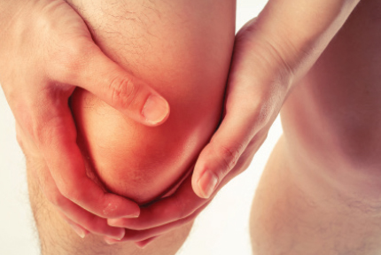

အဆစ်အမြစ်ရောင် ဂေါက် (Gout) ရောဂါမှာ ဘာတွေ ရှောင်ရမလဲ

အဆစ်အမြစ်ရောင် ဂေါက် (Gout) ရောဂါမှာ ဘာတွေ ရှောင်ရမလဲ
ဂေါက် (Gout) အဆစ်အမြစ်ရောင်ရောဂါဆိုတာ သွေးတွင်းမှာ ယူရစ်အက်စစ်ဓါတ် (Uric Acid) များလို့ အဆစ်အမြစ်တွေမှာ စုပုံပြီး အဆစ်အမြစ်တွေကို ရောင်ရမ်းကိုက်ခဲစေတဲ့ရောဂါတစ်ခု ဖြစ်ပါတယ်။ ဒီရောဂါမှာဆို အဆစ်အမြစ်တွေဟာ ရောင်ရမ်း၊ နီရဲနေပြီး တစ်ခါတစ်လေမှာ ပူတောင်ပူနေတတ်ပါတယ်။ ဂေါက်ရောဂါဖြစ်လို့ ဆရာဝန်နဲ့ ပြပြီး ဆေးပုံမှန်သောက်နေပေမယ့် တချို့တွေက အဆစ်အမြစ်ရောင်တာ မသက်သာတာမျိုး ခံစားရတတ်ပါတယ်။
ဂေါက်အဆစ်အမြစ်ရောင်ရောဂါဟာ ဆေးဝါးတင်မက လူနာရဲ့အစားအသောက်ကလည်း အရေးကြီးတဲ့အတွက် ကျန်းမာရေးနဲ့ညီညွတ်ဖို့ အရေးကြီးပါတယ်။ အစားအသောက်ကြောင့် ရောဂါမပျောက်ကင်းသော်လည်း ဂေါက်အဆစ်အမြစ်ရောင်ခြင်း ခဏခဏမဖြစ်စေဖို့နဲ့ အဆစ်အမြစ်တွေ မပျက်စီးစေဖို့ ကူညီပေးနိုင်ပါတယ်။
ဂေါက် (Gout) ရောဂါအတွက် ရှောင်ရမည့် အစားအစာများ
ဂေါက် (Gout) ရောဂါဟာ ယူရစ်အက်စစ် (Uric acid) များလို့ ဖြစ်တာပါ။ ယူရစ်အက်စစ် (Uric acid) ကို အစားအစာတွေမှာပါတဲ့ ပျူရင်း (Purine) လို့ခေါ်တဲ့ ဓာတ်ကို ဖြိုခွဲရင် ရပါတယ်။ ပျူရင်း (Purine) က ခန္ဓာကိုယ်မှာ သဘာဝအတိုင်းရှိနေတဲ့အပြင် တချို့အစားအသောက်ကနေလည်း ရနိုင်ပါတယ်။ ယူရစ်အက်စစ် (Uric acid) ကိုတော့ ဆီးကနေတဆင့် စွန့်ပစ်ပါတယ်။ ဆီးက စွန့်ပစ်နိုင်လောက်တဲ့ပမာဏထက် ပိုကျော်လွန်နေရင်တော့ ဂေါက် (Gout) ရောဂါဖြစ်သွားပါတယ်။ ဒါကြောင့် ပျူရင်း (Purine) ပါဝင်မှုများတဲ့ အစားအစာတွေကို ရှောင်ရပါမယ်။ အဲဒီအစားအစာတွေကတော့-
- အရက်ပါဝင်တဲ့ ယာမကာ၊ ဘီယာ၊ ဝိုင် အကုန်ရှောင်ရပါမယ်။
- ပင်လယ်ကရတဲ့ ပုဇွန်၊ ဂဏာန်း၊ ပင်လယ်စာ ရှောင်ရပါမယ်။ ပင်လယ်ငါးတစ်ချို့ရှောင်ရပါမယ်။
- အနီရောင်အသားဖြစ်တဲ့ အမဲသား၊ ဆိတ်သား၊ ဆတ်သား၊ ဝက်သား ရှောင်ရပါမယ်။
- ဘယ်အသားမဆို ကလီစာ၊ အသည်း စတဲ့အပိုင်းတွေကို ရှောင်ရပါမယ်။
- သကြားပါဝင်မှုများတဲ့ စည်သွပ်အချိုရည်ဘူးတွေ ရှောင်ရပါမယ်။
- ပြုပြင်ကစီဓါတ်ပါဝင်မှုများတဲ့ ပေါင်မုန့်ဖြူ၊ ပတ်စတာခေါက်ဆွဲ၊ သကြားနဲ့ အသင့်စား အစားအစာတွေဖြစ်တဲ့ ခေါက်ဆွဲခြောက်၊ အာလူးကြော်၊ ဒိုးနပ် စတာတွေလည်း ရှောင်ရပါမယ်။
ဂေါက် (Gout) ရောဂါ လက်ရှိခံစားနေရတဲ့သူမှာဆိုရင် ဒီအစားအစာမျိုးကို လုံးဝရှောင်ရမှာ ဖြစ်ပါတယ်။ ဆေးဝါးအပြင် အစားအသောက်ပါ ရှောင်ကြဉ်မှသာ ရောဂါဝေဒနာ သက်သာနိုင်မှာ ဖြစ်ပါတယ်။
ဂေါက် (Gout) ရောဂါမှာ လိုက်နာရမယ့်အချက်တွေက ဘာတွေလဲ
- ကိုယ်အလေးချိန် ထိန်းသိမ်းလျှော့ချရပါမယ်။ အဝလွန်တဲ့သူတွေက အဆစ်အမြစ်ရောင် ဂေါက်ရောဂါ ဖြစ်နိုင်ချေ ပိုများပါတယ်။ ဝိတ်လျှော့မယ်ဆို ဂေါက် (Gout) ဖြစ်နိုင်ချေ နည်းသွားမှာပါ။ ဒါကြောင့် ပျူရင်း (Purine) ပါဝင်မှုများတဲ့အစားအစာတွေ ရှောင်ပြီး ကျန်းမာရေးနဲ့ ညီညွတ်အောင် လေ့ကျင့်ခန်းလုပ်၊ ဝိတ်လျှော့မယ်ဆို ဂေါက် (Gout) ဖြစ်နိုင်ချေနည်းတဲ့အပြင် အဆစ်အမြစ်တွေအပေါ် ဖိအားလည်း နည်းသွားမှာဖြစ်ပါတယ်။
- ရေများများ သောက်ပါ။
- ပြည့်ဝဆီတွေ လျှော့ပါ။ တိရစ္ဆာန်ကရတဲ့အဆီက ပြည့်ဝဆီပါ။ ကြော်ချက်ပြီး ပြန်သုံးတဲ့အဆီကလည်း ပြည့်ဝဆီပါ။ သဘာဝ ဟင်းသီးဟင်းရွက်အဆီကိုသာ အဓိကသုံးပါ။ ခဏခဏပြန်ကျော်တာမျိုး ရှောင်ပါ။
- အဆီနည်းပြီး လတ်ဆတ်တဲ့ အသားစားပါ။ ကြက်သား၊ ဘဲသား စားနိုင်ပါတယ်။ အသားဓာတ် အရင်းအမြစ်အနေနဲ့ ပဲနီလေး အစရှိတဲ့ပဲအမျိုးမျိုးကိုလည်း စားနိုင်ပါတယ်။